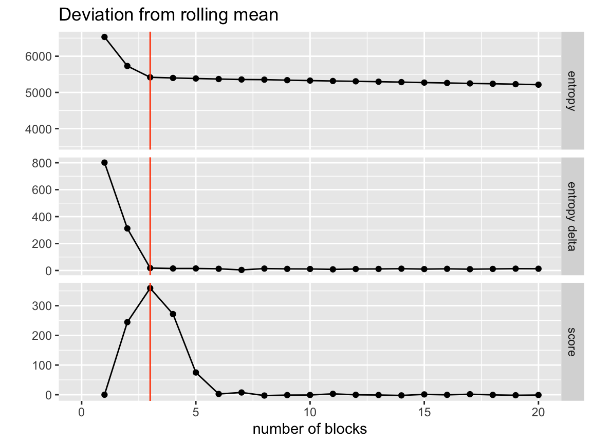

agglomerative_merging.RmdOne technique of finding the optimal number of clusters/ best partitioning is using the efficient agglomerative merging algorithm. This is typically used to find the initial state for MCMC chains but can stand on its own as a clustering method.
Agglomerative merging can be acomplished with the SBM class using the method collapse_groups().
First we will setup a model using an included simulated bipartite network dataset. The true number of groups in this dataset is 6.
library(sbmR)
library(tidyverse)
#> ── Attaching packages ───────────────────────────────────────────────────────────────────────── tidyverse 1.3.0 ──
#> ✔ ggplot2 3.2.1 ✔ purrr 0.3.3
#> ✔ tibble 2.1.3 ✔ dplyr 0.8.3
#> ✔ tidyr 1.0.0 ✔ stringr 1.4.0
#> ✔ readr 1.3.1 ✔ forcats 0.4.0
#> ── Conflicts ──────────────────────────────────────────────────────────────────────────── tidyverse_conflicts() ──
#> ✖ dplyr::filter() masks stats::filter()
#> ✖ dplyr::lag() masks stats::lag()
# Setup SBM model
my_sbm <- create_sbm(simulated_network$edges, simulated_network$nodes)
my_sbm %>% show() %>% head()
#> id parent type level
#> 1 a1 none a 0
#> 2 a10 none a 0
#> 3 a11 none a 0
#> 4 a12 none a 0
#> 5 a13 none a 0
#> 6 a14 none a 0Now that we have our model setup there are two parameters that control this merging.
First we have GREEDY. When this is set to TRUE, the at every merge step the model will check every possible merge for each node and select the best one.
Second is N_CHECKS_PER_GROUP. When GREEDY is set to FALSE, this parameter controls how many possible merges the model explores for each node before choosing the best one. Higher means a longer run time. Note that these potential merges are done by a random sample of neighbor groups so even if N_CHECKS_PER_GROUP is set to the total number of nodes in the network we are not guarenteed to explore all options like GREEDY does.
We will perform a greedy merging here.
Now that we have our model and parameters set we can run the algorithm using the collapse_groups() method. This method takes two arguments, the first is the level to perform the agglomerative merge on (in this case the node-level or 0), and the number of MCMC steps to perform in between each merge to equilibriate the model.
This method returns a list containing the entropy and state of the model at each merge step. We can use these to look at how the merges progressed.
First we will grab the number of groups at each merge step. To do this we pull out the state element and find how many nodes in it have a level of 1 (aka group level).
n_groups <- merge_results %>%
purrr::map('state') %>%
purrr::map_int(~{
.x %>%
dplyr::filter(level == 1) %>%
dplyr::pull(id) %>%
length()
})
n_groups %>% head()
#> [1] 49 22 14 12 10 7Next we can look at how that number of groups corresponds to the entropy of the model. We should almost always see the entropy decrease as we remove groups but if there is signal in the model and the algorithm found it, we should see a relativel “lack of decrease” around the true structure value. We know the true number of groups in this data is 6 so we can reference that here…
tibble(
n_groups = n_groups,
entropy = merge_results %>% purrr::map_dbl('entropy')
) %>%
ggplot(aes(x = n_groups, y = entropy)) +
# geom_step(direction = 'vh') +
geom_line() +
geom_vline(xintercept = 6, color = 'orangered')